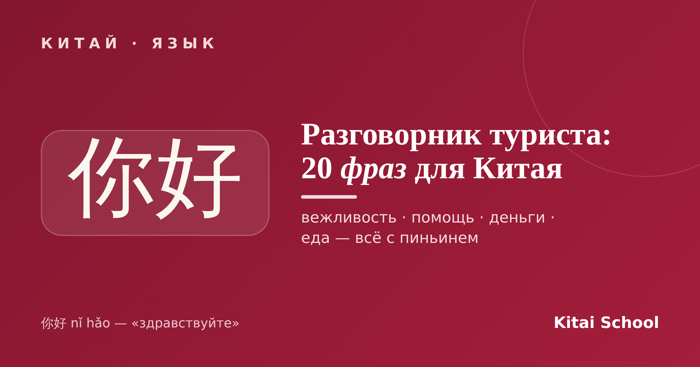
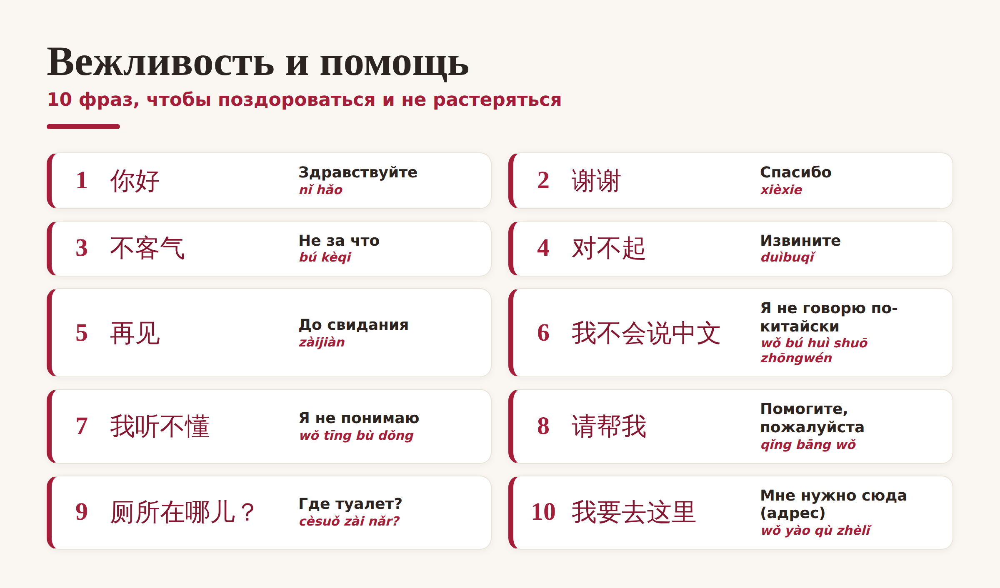
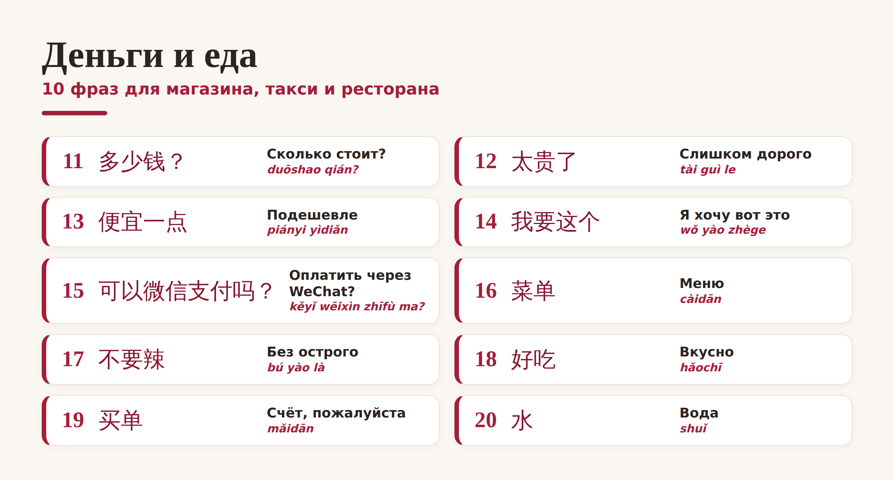

Китай · язык

Едете в Китай и переживаете, что без языка будет сложно? Английский там понимают редко, зато пары десятков простых фраз хватает, чтобы поздороваться, спросить дорогу, поторговаться и заказать еду. Собрала для вас компактный китайский разговорник — 20 полезных фраз на китайском для туристов, все с пиньинем. Сохраняйте перед поездкой.
Начнём с базы. Эти фразы на китайском для туристов пригодятся буквально с первой минуты — поздороваться, поблагодарить и попросить о помощи:

Две фразы-спасатели выделю отдельно. 我不会说中文 (wǒ bú huì shuō zhōngwén) — «я не говорю по-китайски»: с неё удобно начать любой разговор. А 我要去这里 (wǒ yào qù zhèlǐ) — «мне нужно сюда»: показываете таксисту адрес на телефоне и говорите эту фразу. Работает безотказно.
Вторая половина разговорника — для магазинов, такси и ресторанов. Именно эти полезные фразы вы будете использовать чаще всего:

Про оплату отдельно. В Китае почти везде платят телефоном через WeChat или Alipay, поэтому фраза 可以微信支付吗？ (kěyǐ wēixìn zhīfù ma?) — «можно оплатить через WeChat?» — сейчас едва ли не полезнее наличных. А в кафе пригодятся 不要辣 (bú yào là) «без острого» и 买单 (mǎidān) «счёт, пожалуйста».
И пара лайфхаков, чтобы не растеряться, даже когда фразы вылетели из головы:
Показывайте, а не произносите. Держите нужные фразы и адрес отеля на экране телефона — китайцу проще прочитать иероглифы, чем разобрать ваше произношение.
Ставьте переводчик заранее. Скачайте приложение-переводчик с камерой (оно переводит меню и вывески по фото) до поездки — в Китае доступ к части сервисов ограничен.
Показывайте пальцем и говорите 这个 (zhège) — «вот это». В магазине и кафе этот приём выручает всегда.
Совет. Даже пара слов по-китайски творит чудеса: местные теплеют на глазах, когда иностранец старается говорить на их языке. Выучите хотя бы 你好 и 谢谢 — и поездка станет заметно дружелюбнее.
Вот и весь мини-разговорник: 20 полезных фраз, с которыми не страшно ехать в Китай без языка. Сохраните эту подборку в закладки — а если захочется понимать больше пары фраз, это отличный повод начать учить китайский всерьёз.
Счастливого пути! 一路平安。